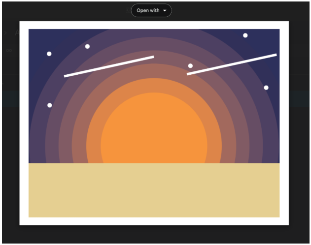
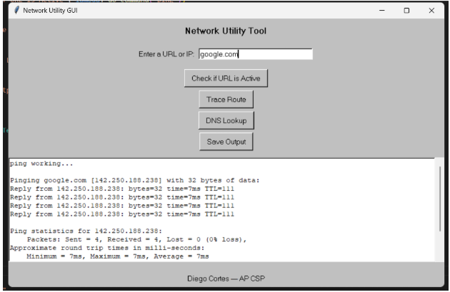

1.1.9 Algorithms and Art Project
This project focuses on creating a image with the python turtle. The activity goal was to Apply all I have learned to plan and create an image of my choosing and explain how a variety of algorithms work in your program.
2.2.7 Creating a Command Line GUI
This project I made my own custom Network Utility Tool. The activity goal was to create a custom interface for a network analyzer tool that uses command-line utilities and Customize a GUI to requirements and specifications.